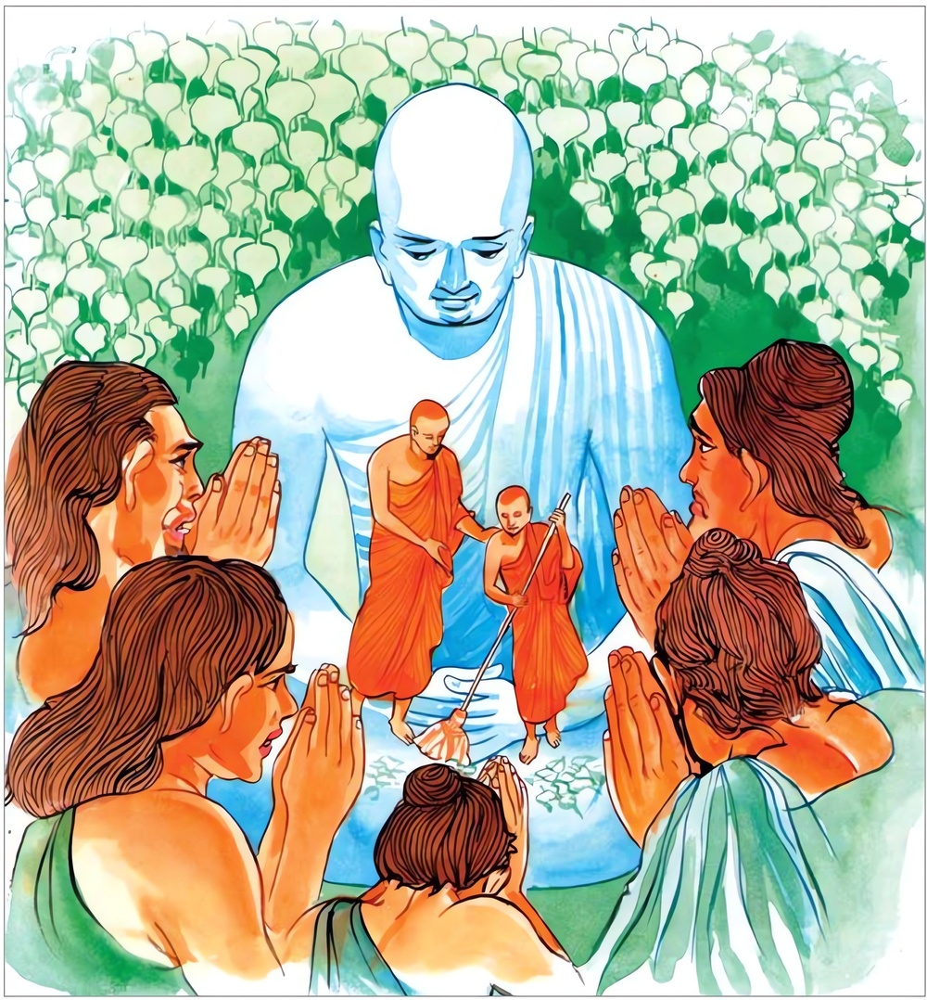

12-3 පධානික තිස්ස තෙරුන්ගේ කථා පුවත.
මෙම කතාව සද්ධර්ම සාගරයෙන් ද කියවන්න.
අත්තානඤ්චෙ තථා කයිරා යථඤ්ඤමනුසාසති
සුදන්තො වත දම්මෙථ අත්තා හි කිර දුද්දමො.
අනෙකකුට යම්සේ අනුශාසන කෙරේ ද, එසේ ම තමා ප්රතිපත්තිසාරයකු කරන්නේ වී නම්, හේ තෙමේ මනා වැ දැමුනේ අනුන් දාන්ත කරන්නේ ය. යම් හෙයකින් තමා දමනය කිරීම දුෂ්කර ද (හෙවත් ආත්ම දමනය උගහට ද,) එ හෙයිනි. (යම් ලෙසෙකින් තමා දාන්ත කරණ ලද්දේ මොනවට දැමුනේ නම් වේ ද එ ලෙස දැමිය යුතු).

"අත්තානඤ්චෙ" යන මේ ධර්මදේශනය ශාස්තෲන් වහන්සේ දෙව්රම වැඩසිටිය දී පාධානික තිස්ස තෙරුන් නිමිති කරගෙන දේශනා කළහ.
හේ බුදුන්ගෙන් කර්මස්ථාන ලබාගෙන පන්සියයක් භික්ෂු ගෙන ආරණ්යවාසයට ගොස්, ඇවැත්නි ජීවමාන බුදුන් වැඩසිටියදීම ඔබලා කර්මස්ථාන ලබාගෙන සිටින හෙයින් අප්රමාදීව ධර්ම කරන්නැයි අවවාද දී තමන් ගොස් වැතිරී නිදාගනී. එම භික්ෂූන් පළමු යාමය සක්මන් කර, මධ්යම යාමයේදී විහාරයට පිවිසෙති. ඔහු නිදාගෙන අවදි වූ අවස්ථාවේ දී ඔවුන් සමීපයට ගොස් කීම ඔබ වහන්සේලා වැතිරී නිදන්නෙමුයි ආවේද? වහා නික්මී ධර්මය කරන්නැයි කියා තමන් ගොස් පළමු ලෙසටම නිදාගනී. අනෙක් තෙරවරු මධ්යම යාමයේ ද පිටත සක්මන් කර අළුයම් වේලේ පන්සලට පිවිසෙති. අර තෙරුන් නැවත අවදී වී ඔවුන් වෙත ගොස් ඒ භික්ෂූන් ආරාමයෙන් බැහැර කොට නිදාගනී. මේ නිසා එම භික්ෂූන් වහන්සේලාට සජ්ඣායනාවක් හෝ කර්මස්ථානයක් හෝ සිහිපත් කිරිමට නොහැකිවුහ. සිත අන් අතකට ගියේය. එම භික්ෂුහු අපේ අචාර්යන් වහන්සේ ඉතා අධික ලෙස පටන් ගත් වෛර ඇතිව අප වෙහෙසවා ඔහු කරන නිදාගැනීමේ ක්රියාව දැක ඇවැත්නි අපි නැසුනෙමු. අපේ ගුරුවරයා හිස් තැනැත්තෙකි බොරුවට අපට කෑගසතියි කීවාහුය. එම භික්ෂූන් අතිශයින් නිදිමතින් ක්ලාන්තව එක භික්ෂුවකටද විශේෂ අධිගම්යයක් ලබාගැනීමට නොහැකිවිය. එම භික්ෂූන් වහන්සේලා වස් පවාරණය කිරීමෙන් අනතුරුව තථාගතයන් වහන්සේ සමීපයට ගොස් බුදුන් සමග පිළිසඳර කථාකොට අනතුරුව බුදුරජාණන් වහන්සේ කිම මහණෙනි අප්රමාදීව මහණ දම් පිරුවාහුදැයි විමසුහ. ඔවුහු තමන්ට සිදුවු ගැහැට පිළිබඳවත් ගුරුවරයාගේ ස්වරූපයත් පෙන්වා දුන්හ. බුදුරජාණන් වහන්සේ මහණෙනි දැන් පමණක් නොව පෙරද මේ තැනැත්තා ඔබට අනතුරක්ම, බාධාවක්ම කළේ යයි පවසා සිටිවිට එම භික්ෂූන්ගේ ආයාචනය පරිදි, අකාලරා වී කුක්කුට ජාතකය විස්තර කොට වදාළසේක.
මව්පියන් සමීපයේ නො වැඩුනු, ගුරුවරයකු සමීපයේ පුහුණු නොවූ මේ කුකුළා හැඬලිය යුතු කාලය හෝ නො හැඬලිය යුතු කාලය නො දනී.
එදා නොකල්හි නාද කළ කුකුළා මේ පධානික තිස්ස තෙරුන් විය. මේ පන්සියයක් භික්ෂුහු ඒ තරුණයෝ වුහ. දිසාපාමොක් ආචාර්ය වුයේ මම යි. බුදුහු මෙම ජාතකය විස්තර කර මහණෙනි! අන් අයට අවවාද කරන තැනැත්තා තමා සුදනෙක් වියයුතු යයි පවසමින් මේ ගාථාව දේශනා කළහ. අන් අයට අනුශාසනා කරණුයේ තමන්ද එසේ කළ යුතුය. තමන් දමනය නොවී අන් අය දමනය කළ නොහේ.
තමන් පළමුව සුදුසෙකු වී - අනුන් දෙවනුව හික්ම වියයුතු
තමන් නො දැමී දුදනෙකුම වී - අනුන් සුදනන් කෙසේ කරමුද?
මෙහි අදහස යම් සේ භික්ෂුව ප්රථම යාමය ආදියේ සක්මන් කළ යුතු යයි පවසා අවවාද කරයි. තමන් එසේ නොකරයි. අන්තාන ඤෙච තථා කයිරා යථඤඤමනුසාසති අන් අයට උපදෙස් දෙන ලෙසට තමන් ද පිළිපැදිය යුතුය. සුදන්තො වත දම්ථොති යම් ගුණයකින් අන් අයට අවවාද කරන්නේද තමන් ද ඒ ලෙස දමනය විය යුතුය. මෙම දෙසුම අවසානයේ පන්සියයක් වූ එම භික්ෂූන් වහන්සේලා අරහත්වයට පැමිණියහ.